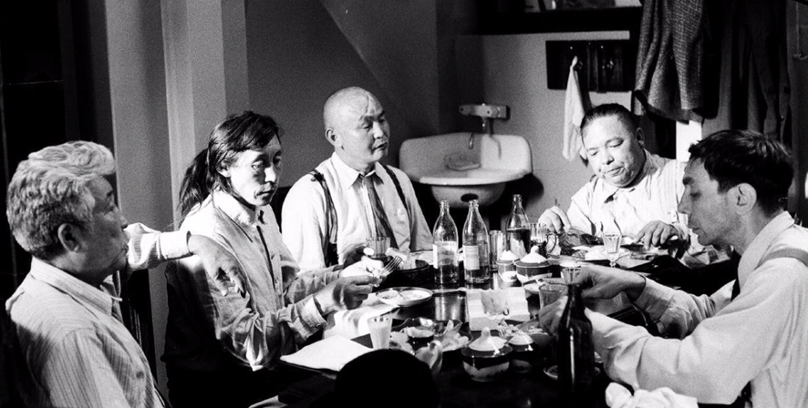
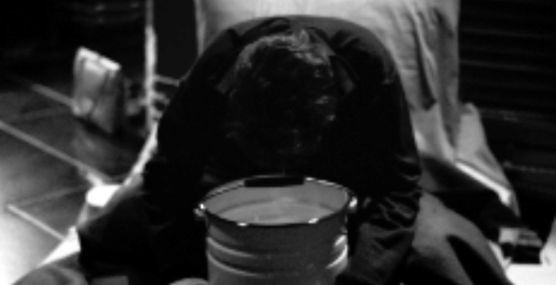
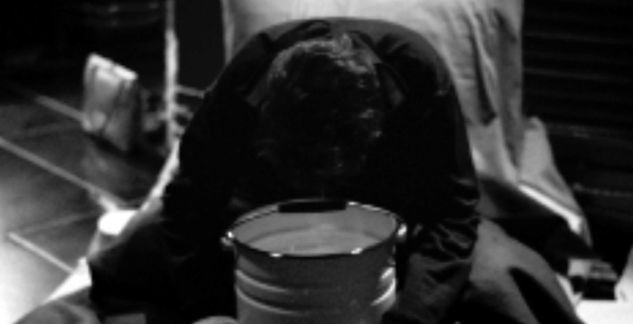

DAU — PRTCL. SC000–AA–0011 Institute years: 1942–1956
NO. 0011A Alina Alekseeva
Senior Assistant in the Spatial Fluctuations
Research Lab

DAU — PRTCL. STRP–D–AA–49
NO. 0001B Alexey Blinov,
Head
of Experimental
Department


DAU — PRTCL. STRP–D–AA–498 NO. 0011A Alina Alekseeva
~ 1955

DAU — PRTCL. SC000–AA–0776
NO. 0001B
EXP. 000A–01-09 Human Telepathy Potential Absorbtion/Consumption Factors (F(A/C)
Alexey Blinov, Head of Experimental Department
NFE 114NEG 0001B Experiments
DAU — PRTCL. NFE7–14–21
RGR. 0018–AB-16
EXP. A–08-07
A — 'DEAD WATER'
X — Time, days
Y — Height, mm
Growth speed, mm/day
Crops:
A. Black Radish (origin unknnown)
B. Local Peas (46.4792,30.7277)
C. Oats (o/u)
D. Peas (o/u)
0
NFE7–14–21 A–16
FR: 02.08.1952 POS | NEG
NFE7–14–21 B–16
FR: 02.08.1952 POS | NEG
0001B Experiments
DAU — PRTCL. NFE7–14–21
A–16: 'DEAD' WATER'

Day 1... 7
30
A
B
C
D
0
0001B Experiments
DAU — PRTCL. NFE7–14–21
B–16: 'LIVE' WATER'

Day 1... 7
30
A
B
C
D
0

NO. 0001B Alexey Blinov,
Head of Experimental Department
Institute years: 1937-1968
19 07 Born In Moscow to a family of engineers.
25 Began studies at three-year Medical
Assistance School.
28 Completed studies at Medical Assistance School.
29 Between 1929 and 1937, studied abroad.
Birmingham University, College of Mason Science
The University of Sheffield, UK;
The University of Utrecht, Netherlands.
Defended dissertations on:
Power control and measuring equipment
and methods of measurement and control;
Methods of application of electrical equipment;
Application of methods of modern electronics
for communications and control systems.
19 37 Became Head of the Experimental Department
at the Institute, after the arrest of A.N. Tupolev.
42 Began developing a device for the wireless
transmission of energy.
Defended classified doctoral thesis on
wireless transmission of energy.
52 Concluded work on wireless transmission device.
Awards, honours, and expertise:
Stalin Prize of 1st degree for outstanding
achievement in physics;
Order of Lenin;
Order of the Red Banner;
Medal for Work Excellence
The Institute HR Profile
1. Surname: Blinov
Name: Alexey Second Name: Urievich
2. Gender: Male 3. Birth Date: 1907 4. Place of birth:
A. Current administrative division: Kazan
B. Previous administrative division:
5. Nationality: Russian 6. Social origins:
A. Parents previous social status (title): clerk
B. Parents basic employment before October Social Revolution: engeneers,
after revolution:
7. Basic employment (profession) now
(at the moment you joined the Party (for VKP(b) members): engeneer;
experience: social status: clerk 9. Party affiliation:
10. Organization approved VKP(b) membership:
11. Party experience: Party Docement number:
12. VLKSM experience: 13. Other parties experience:
14. Previous VKP(b) experience:
15. Have you ever have any doubts on the Party line, did you take part
in any opposition movement:
16. Are you a member of any labor union, which and since when: N
17. Education: High
| | Education. | Faculty | Date | | Course | Specs. |
| | Title and place | | Ent./Left | | | |
| | | | | | | |
| | | | | | | |
-------------------------------------------------------------------------
| A | MSU | Physics | 1925/1931 | | | Physics |
| | | | | | | |
| | | | | | | |
-------------------------------------------------------------------------
| A | MSU | Physics | 1925/1931 | | | Physics |
| | | | | | | |
| | | | | | | |
18. Education Title: Phd.
19. Publications/Patents (list in appendix): Y
The Institute HR Profile
1. Surname: Blinov
Name: Alexey Second Name: Urievich
2. Gender: Male 3. Birth Date: 1907 4. Place of birth:
A. Current administrative division: Kazan
B. Previous administrative division:
5. Nationality: Russian 6. Social origins:
A. Parents previous social status (title): clerk
B. Parents basic employment before October Social Revolution: engeneers,
after revolution:
7. Basic employment (profession) now
(at the moment you joined the Party (for VKP(b) members): engeneer;
experience: social status: clerk 9. Party affiliation:
10. Organization approved VKP(b) membership:
11. Party experience: Party Docement number:
12. VLKSM experience: 13. Other parties experience:
14. Previous VKP(b) experience:
15. Have you ever have any doubts on the Party line, did you take part
in any opposition movement:
16. Are you a member of any labor union, which and since when: N
17. Education: High
| | Education. | Faculty | Date | | Course | Specs. |
| | Title and place | | Ent./Left | | | |
| | | | | | | |
| | | | | | | |
-------------------------------------------------------------------------
| A | MSU | Physics | 1925/1931 | | | Physics |
| | | | | | | |
| | | | | | | |
-------------------------------------------------------------------------
| A | MSU | Physics | 1925/1931 | | | Physics |
| | | | | | | |
| | | | | | | |
18. Education Title: Phd.
19. Publications/Patents (list in appendix): Y
20. Have you ever been abroad:
| Date | State, City | Purpose |
| Entry | Exit | | |
| | | | |
| | | |

DAU — PRTCL. SC000–CE
NO. 0001B
Alexey Blinov

DAU — PRTCL. В412-C
NO. 0001B
Alexey Blinov

DAU — PRTCL. STRP–D–AB–190 NO. 0001B Alexey Blinov
NO. 0001B Alina Alekseeva

DAU — PRTCL. STRP–D–AB–197 NO. 0001B Alexey Blinov
NO. 0001B Alina Alekseeva
DAU — PRTCL. STRP–D–AB–198 NO. 0001B Alexey Blinov
NO. 0001B Alina Alekseeva
25. Have you been participating the revolution movement,
have you been repressed for your actions before October Revolution: N
26. Have you ever been a guerrilla member: N
|
28. Did you take part in Civil or World War (where, status): N
29. Сaptivity (where, how was captivated an freed): N
|
|
|
|
|
|
38. Address: The Institute
DAU — PRTCL. SC000–G1
NO. 0012С Alexey Blinov, Head of Experimental Department
EXP. 000A–08–07 A draft for exp. G–0008
ZH.PIR
D.PIR
ZH.B.PIR
D.B.PIR


DAU
NO. 0001B
— PRTCL. SC000–CE
Alexey Blinov
DAU — PRTCL. SC000–CH
NO. 0001B Alexey Blinov NO. 0001B
DAU — PRTCL. SC000–CI DAU — PRTCL. SC000–CO
Alexey Blinov NO. 0001B Alexey Blinov

NO. 0001B
DAU — PRTCL. SC000–AX
Alexey Blinov
Head of Experimental
Department
DAU — PRTCL. SC144–000021
NO. 0001B Alexey Blinov and ...
NO. 0001B
DAU — PRTCL. SC144–000028
Alexey Blinov
DAU — PRTCL. В412 NO. 0001B Alexey Blinov
DAU — PRTCL. SC000–AB
NO. 0001B Alexey Blinov and ...
DAU — PRTCL. SC000–AB–0163
DAU — PRTCL. SC000–AB–0164
DAU — PRTCL. SC000–AB–0271
DAU — PRTCL. SC000–AB–0301
ADX 158AF4 Temporary Residents
IDL–781
DAU — PRTCL. В412
NO. 00022-VF David Gross

Member of the International Scientific
Conference at the Institute
Institute years: 1956
ADX 158AF4 Temporary Residents
SDI—782
DAU — PRTCL. В412
NO. 00024-IP Peter Sellars

Member of the International
Scientific Conference at the Institute
Institute years: 1942
DAU — PRTCL. В412
NO. 00024-IP Peter Sellars (02.01 19:02)

AFR 902DY1 Formative Results
of the ISC at the Institute
DAU — PRTCL. FDI9 DRFT. 001H–98–47–KTL1
PRTTP . TSTS
--.05.1956 | | BLD

ADX 142HF1 Temporary Residents
TRI–122
DAU — PRTCL. В412
NO. 00011-CH Shinng-Tung Yau

Member of the International Scientific
Conference at the Institute
Institute years: 1956
ADX 158AF4 Temporary Residents
SDI—781
DAU — PRTCL. В412
NO. 00044-BC James H. Fallon

Professor of Anatomy and Neurobiology
at the University of California (Irvine);
Institute years: 1968
ADX 142HF1 Temporary Residents
OZR–015
DAU — PRTCL. S144
NO. 00024-AL Vyacheslav Cheltuev
Shaman, member of cultural delegation from Gorno-Altai Autonomus Institute years: 1956
AFT 142HF8
Formative Results
OZR–015
DAU — PRTCL. SC144–000012
RTL.. 220 CP

DAU — PRTCL. SC144–000146
RTL.. 357 AYAHSC
DAU — PRTCL. SC144–000128
RTL.. 229 CP
 

DAU — PRTCL. SC144–000147
RTL.. 382 AYAHSC
DAU — PRTCL. SC000–OS–0001 Institute years: 1952–1960
NO. 0012С Olga Shkabarnya
Waitress,
Head of the cafė
DAU — PRTCL. SC000–OS–0004
DAU — PRTCL. SC000–OS–0006

DAU — PRTCL. STRP–D–OS–064
DAU — PRTCL. SC000–OS–0009
DAU — PRTCL. STRP–D–OS–070

DAU — PRTCL. SC000–OS–0011

DAU — PRTCL. SC000–OS–0016
DOC. 000C–0–8-07
| | Swiss Cheese | 1 790 g | |
| | Russian Cheese | 1 860 | |
| | Oranges | 1 140 | 4 |
| | Lemons | 220 | 2 |
| | Apples | 940 | 5 |
| | Coffee | 300 | |
| | Lemons | 550 | 4 |
| 2.01 | “Krakovskaya“ Sausage | 1 000 | |
| | “Varenaya” Sausage | 2 930 | |
| | “Moscowskaya“ Sausage | 360 | |
| | “Tsvetochnoe” Cookies | 1 560 | |
| | “Ovsyanoe” Cookies | 1 320 | |
| | Swiss Cheese | 3 330 | |
| | Russian Cheese | 3 790 | |
| | Lard | 510 | |
| | Apples | 300 | 2 |
| | Toffee | 870 | 7 |
| | Roquefort Cheese | 790 | |
| | Olives | 230 | |
| | Horseradish | 200 | |
| | Mustard | 200 | |
| 6.01 | Black olives | 210 | |
| 7.01 | Apples | 810 | 5 |
| | “Kartoshka“ dessert | | 4 |
| | “Moscowskaya“ Sausage | 380 | |
| | “Krakovskaya“ Sausage | 520 | |
|
|
DOC. 000C–0–8-18 \ BB.IDN SAVED AS COPY
| | Swiss Cheese | 1 790 | |
| | Russian Cheese | 1 860 | |
| | Oranges | 1 140 | 4 |
| | Lemons | 220 | 2 |
| | Apples | 940 | 5 |
| | Coffee | 300 | |
| | Lemons | 550 | 4 |
| 2.01 | “Krakovskaya“ Sausage | 1 000 | |
| | “Varenaya” Sausage | 2 930 | |
| | “Moscowskaya“ Sausage | 360 | |
| | “Tsvetochnoe” Cookies | 1 560 | |
| | “Ovsyanoe” Cookies | 1 320 | |
| | Swiss Cheese | 3 330 | |
| | Russian Cheese | 3 790 | |
| ERR. | Lard | 510 | |
| | Apples | 300 | 2 |
| | Toffee | 870 | 7 |
| | Roquefort Cheese | 790 | |
| | Olives | 230 | |
| | Horseradish | 200 | |
| | Mustard | 200 | |
| 6.01 | Black olives | 210 | |
| 7.01 | Apples | 810 | 5 |
| | “Kartoshka“ dessert | | 4 |
| | “Moscowskaya“ Sausage | 380 | |
| | “Krakovskaya“ Sausage | 520 | |

DAU — PRTCL. SC000–OS–0019 # Institute
DAU — PRTCL. AU0024–OS–079 # Institute

DAU — PRTCL. AU0024–OS–080

DAU — PRTCL. AU0024–OS–081
DAU — PRTCL. AU0024–OS–082
DAU — PRTCL. AU0024–OS–110 # Institute
NO. 0012C
Olga Shkabarnya
ADX 158AF4 Temporary Residents
SDI—781
DAU — PRTCL. В412
NO. 00011-D4 Carlo Rovelli
Выгрузить фотку
Выгрузить фотку
Members of the International Scientific Conference at the Institute
Institute years: 1942; 1956
AFR 902DY1 Formative Results
of the ISC at the Institute
DAU — PRTCL. FDI9
DRFT. 002H–98–47–KTL7
Energy Transmitor
Component
DX178 D
PRTTP . TSTS
21.05.1956 | POS | NEG BLD
ADX 158AF4 Temporary Residents
SDI—781
DAU — PRTCL. В412
NO. 00011-D4 Carlo Rovelli and NO. 00024-07 Peter Sellars

Members of the International Scientific Conference at the Institute
Institute years: 1942; 1956
DAU — PRTCL. В412
NO. 00011-D4 Carlo Rovelli and NO. 00002-01 Andrey Losev
ADX 142HF1 Temporary Residents
OZR–015
DAU — PRTCL. S144
NO. 00017-A1 Guillermo Valera

Shaman, Doctor of Medical Science
Institute years: 1968
ADX 142HF1 Temporary Residents
OZR–016
DAU — PRTCL. S144
NO. 00128-PH19 Alexander Vilenkin
Members of the International Scientific
Conference at the Institute
Institute years: 1956
AFR 705XG1 Formative Results
of the ISC at the Institute
DAU — PRTCL. FR37–42–13
DRFT. 000A–08-01
Twins Prophets
2nd Gen Structural
Fatigue
Tensors
DRFT: 16.01.1956
PRTTP . TSTS
21.03.1956 | POS | NEG
22.03.1956 | POS | NEG
01.04.1956 | POS | NEG
02.04.1956 | POS | NEG
05.04.1956 | POS | NEG
06.04.1956 | POS | NEG
08.04.1956 | POS | NEG
APPR: 14.06.1956
The Institute
Formative Committee
ADX 148AF7 Temporary Residents
OZR–019
DAU — PRTCL. S004
NO. 00032-PS1

Abbot, Employee of the
department under Holy
Institute years: 1966
ARK 148AF7 OZC–117
DAU — PRTCL. ID11
NO. 0000D–DL15 Dmitry Kadelin

Head of the Mathematical Physics Laboratory
Institute years: 1941–
DAU — PRTCL. CR02–K
International Scientific Conference at the Institute

Deputy Director of the Institute Director of the Institute
1953-1956 1956-1960
DAU — PRTCL. AVEX–H
NO. 0012C Olga Shkabarnya


DAU — PRTCL. STRP–D–OS–112
NO. 0012C Olga Shkabarnya

DAU — PRTCL. STRP–D–OS–113
NO. 0012C Olga Shkabarnya
ADX 148AF7 Temporary Residents
OZR–020
DAU — PRTCL. ID07
NO. 00ST2–TSR1 Adin Steinzalts

Rabbi, Judaism specialist
Institute years: 1966
ADX 158AF4 Temporary Residents
OZR–021
DAU — PRTCL. ID07
NO. 00BG0–FSQ1 Boris Mikhailov

Photojournalist, Telegraph Agency
of Soviet Union (TASS)
Institute years: 1952-1968
DAU — PRTCL. AXS–D–AU–011 NO. 00001 Dau
AAA 001AFA DAU
SDI—781
DAU — PRTCL. EXT
NO. 00011-D4 DAU
1956 1968


Head of Theoretical Physics Department
Institute years: 1940– 1962

DAU — PRTCL. AXS–D–AU–112 NO. 00001 Dau